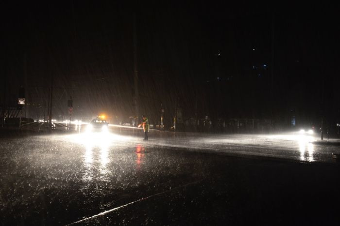

October 8, 2015
He sat in his car and sped off into the night, engulfed by the darkness, never to return again. He regretted what he had done, but there was no way he could undo it. After what he had done, there was no turning back; no shot at redemption- he didn’t need one. He was in control, he had all he needed, no one knew what was in the back seat of his car. Jack turned around and looked at the knapsack that occupied the back seat. The grey knapsack was one his earliest birthday gifts, given to him to by his father, James, who was a serial camper. Jack had longed to be a part of his father’s monthly camping trips’; letting his imagination run wild he would make up stories of his father and his friends escapades. He would dream up stories of James and his friends encountering a bear along their trek to the turkey range; hiking up the precipice to admire the view atop Mt. Rushmore; looking the sun in the eye and looking down at the mindless masses following orders like puppets in a show. His father, James, had always taught him to be extraordinary, to be the owner of his own destiny.